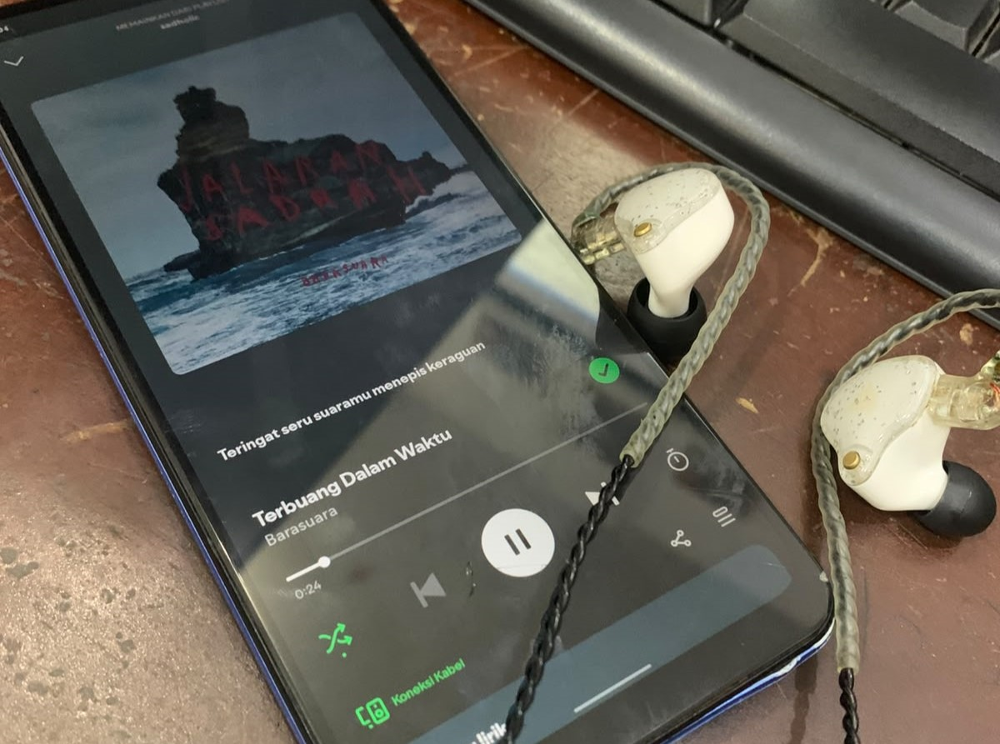

anak rpl yang tertarik pada komputer, pemrograman, gitar, gaming, dan dunia audio.
Lihat Profil| Nama | Muhammad Satria |
| Jurusan | RPL (Rekayasa Perangkat Lunak) |
| Alamat | Semarang, Jawa Tengah |
| Hobi | Gaming • Gitar • Audiophile |
Saya senang mempelajari teknologi baru dan terus mengembangkan kemampuan di bidang rekayasa perangkat lunak. Saya sangat menikmati tantangan baru di dunia pemrograman dan selalu berusaha menyelesaikan setiap target dengan komitmen tinggi.

Dokumentasi hobi dadakan pas nugas: hobi.jpeg.
"It’s not a bug, it’s an undocumented feature."